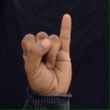
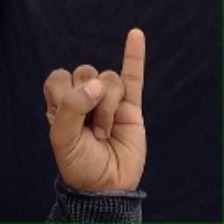

Sit Close to your webcam to get a real-time classification!
When ready click "Enable webcam" below and accept access to the webcam when the browser asks (check the top left of your window).
Scroll Below for Guide to Indian Sign Language Hand Gestures
Refresh the page to stop processing
 6
7
My
How Are You?
6
7
My
How Are You? Home
Home